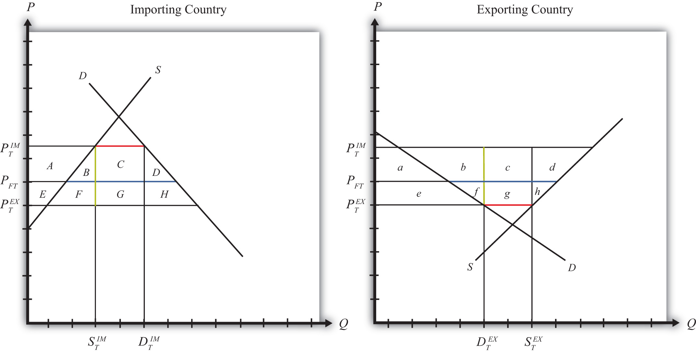
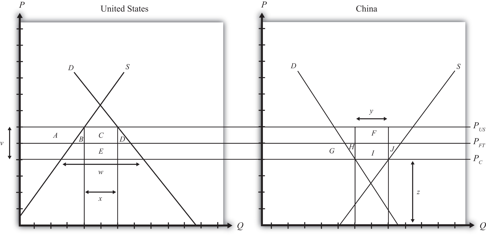

Suppose that there are only two trading countries: one importing country and one exporting country. The supply and demand curves for the two countries are shown in Figure 7.13 "Welfare Effects of a Tariff: Large Country Case". PFT is the free trade equilibrium price. At that price, the excess demand by the importing country equals excess supply by the exporter.
Figure 7.13 Welfare Effects of a Tariff: Large Country Case
The quantity of imports and exports is shown as the blue line segment on each country’s graph. (That’s the horizontal distance between the supply and demand curves at the free trade price.) When a large importing country implements a tariff it will cause an increase in the price of the good on the domestic market and a decrease in the price in the rest of the world (RoW). Suppose after the tariff the price in the importing country rises to and the price in the exporting country falls to . If the tariff is a specific tax, then the tariff rate would be , equal to the length of the green line segment in the diagram. If the tariff were an ad valorem tax, then the tariff rate would be given by .
Table 7.1 "Welfare Effects of an Import Tariff" provides a summary of the direction and magnitude of the welfare effects to producers, consumers, and the governments in the importing and exporting countries. The aggregate national welfare effects and the world welfare effects are also shown.
Table 7.1 Welfare Effects of an Import Tariff
| Importing Country | Exporting Country | |
|---|---|---|
| Consumer Surplus | − (A + B + C + D) | + e |
| Producer Surplus | + A | − (e + f + g + h) |
| Govt. Revenue | + (C + G) | 0 |
| National Welfare | + G − (B + D) | − (f + g + h) |
| World Welfare | −; (B + D) − (f + h) |
Refer to Table 7.1 "Welfare Effects of an Import Tariff" and Figure 7.13 "Welfare Effects of a Tariff: Large Country Case" to see how the magnitudes of the changes are represented.
Tariff effects on the importing country’s consumers. Consumers of the product in the importing country suffer a reduction in well-being as a result of the tariff. The increase in the domestic price of both imported goods and the domestic substitutes reduces the amount of consumer surplus in the market.
Tariff effects on the importing country’s producers. Producers in the importing country experience an increase in well-being as a result of the tariff. The increase in the price of their product on the domestic market increases producer surplus in the industry. The price increases also induce an increase in the output of existing firms (and perhaps the addition of new firms); an increase in employment; and an increase in profit, payments, or both to fixed costs.
Tariff effects on the importing country’s government. The government receives tariff revenue as a result of the tariff. Who benefits from the revenue depends on how the government spends it. Typically, the revenue is simply included as part of the general funds collected by the government from various sources. In this case, it is impossible to identify precisely who benefits. However, these funds help support many government spending programs, which presumably help either most people in the country, as is the case with public goods, or certain worthy groups. Thus someone within the country is the likely recipient of these benefits.
Tariff effects on the importing country. The aggregate welfare effect for the country is found by summing the gains and losses to consumers, producers, and the government. The net effect consists of three components: a positive terms of trade effect (G), a negative production distortion (B), and a negative consumption distortion (D).
Because there are both positive and negative elements, the net national welfare effect can be either positive or negative. The interesting result, however, is that it can be positive. This means that a tariff implemented by a large importing country may raise national welfare.
Generally speaking, the following are true:
However, it is also important to note that not everyone’s welfare rises when there is an increase in national welfare. Instead, there is a redistribution of income. Producers of the product and recipients of government spending will benefit, but consumers will lose. A national welfare increase, then, means that the sum of the gains exceeds the sum of the losses across all individuals in the economy. Economists generally argue that, in this case, compensation from winners to losers can potentially alleviate the redistribution problem.
Tariff effects on the exporting country’s consumers. Consumers of the product in the exporting country experience an increase in well-being as a result of the tariff. The decrease in their domestic price raises the amount of consumer surplus in the market.
Tariff effects on the exporting country’s producers. Producers in the exporting country experience a decrease in well-being as a result of the tariff. The decrease in the price of their product in their own market decreases producer surplus in the industry. The price decline also induces a decrease in output, a decrease in employment, and a decrease in profit, payments, or both to fixed costs.
Tariff effects on the exporting country’s government. There is no effect on the exporting country’s government revenue as a result of the importer’s tariff.
Tariff effects on the exporting country. The aggregate welfare effect for the country is found by summing the gains and losses to consumers and producers. The net effect consists of three components: a negative terms of trade effect (g), a negative consumption distortion (f), and a negative production distortion (h).
Since all three components are negative, the importer’s tariff must result in a reduction in national welfare for the exporting country. However, it is important to note that a redistribution of income occurs—that is, some groups gain while others lose. In this case, the sum of the losses exceeds the sum of the gains.
Tariff effects on world welfare. The effect on world welfare is found by summing the national welfare effects on the importing and exporting countries. By noting that the terms of trade gain to the importer is equal to the terms of trade loss to the exporter, the world welfare effect reduces to four components: the importer’s negative production distortion (B), the importer’s negative consumption distortion (D), the exporter’s negative consumption distortion (f), and the exporter’s negative production distortion (h). Since each of these is negative, the world welfare effect of the import tariff is negative. The sum of the losses in the world exceeds the sum of the gains. In other words, we can say that an import tariff results in a reduction in world production and consumption efficiency.
Jeopardy Questions. As in the popular television game show, you are given an answer to a question and you must respond with the question. For example, if the answer is “a tax on imports,” then the correct question is “What is a tariff?”
Consider the following trade policy actions (each applied by the domestic country) listed along the top row of the table below. In the empty boxes, use the following notation to indicate the effect of each policy on the variables listed in the first column. Use a partial equilibrium model to determine the answers and assume that the shapes of the supply and demand curves are “normal.” Assume that none of the policies begin with or result in prohibitive trade policies. Also assume that none of the policies correct for market imperfections or distortions. Use the following notation:
+ the variable increases
− the variable decreases
0 the variable does not change
A the variable change is ambiguous (i.e., it may rise, it may fall)
For example, an import tariff applied by a large country will cause an increase in the domestic price of the import good; therefore, a + is placed in the first box of the table.
Table 7.2 Trade Policy Effects
| I | II | |
|---|---|---|
| Import Tariff by a Large Country—Initial Tariff Is Zero | Import Tariff Reduction by a Large Country | |
| Domestic Market Price | + | |
| Domestic Industry Employment | ||
| Domestic Consumer Welfare | ||
| Domestic Producer Welfare | ||
| Domestic Government Revenue | ||
| Domestic National Welfare | ||
| Foreign Price | ||
| Foreign Consumer Welfare | ||
| Foreign Producer Welfare | ||
| Foreign National Welfare |
Consider the following partial equilibrium diagram depicting two countries, China and the United States, trading a product with each other. Suppose PFT is the free trade price, PUS is the price in the United States when a tariff is in place, and PC is the price in China when a tariff is in place. Answer the following questions by referring to the figure below. Assume the letters, A, B, C, D, E, F, G, H, I, and J refer to areas on the graph. The letters v, w, x, y, and z refer to lengths.
Figure 7.14 Two Large Trading Countries
